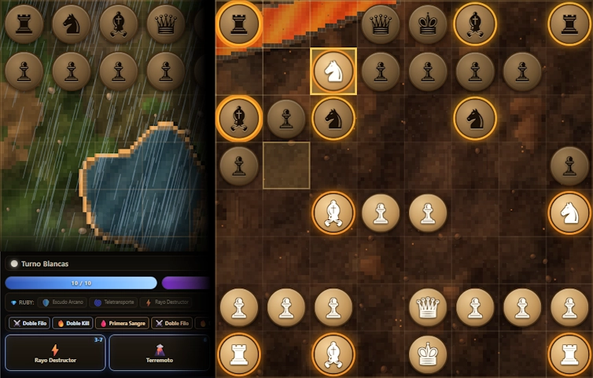
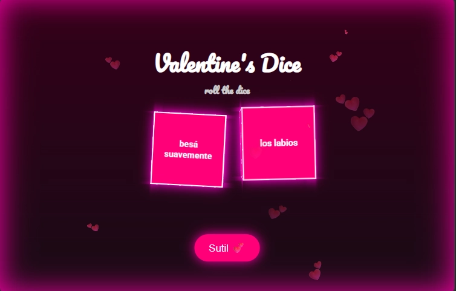
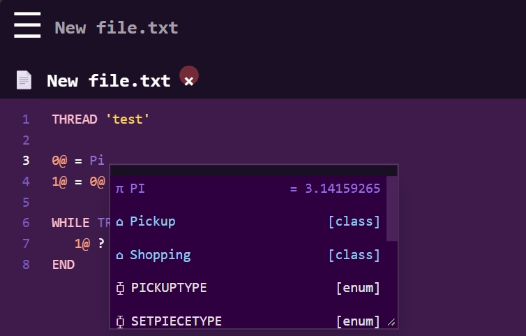

Desarrollador enfocado en la creación de herramientas, compiladores y sistemas de scripting. Me interesa especialmente diseñar tecnologías que permitan a otros desarrolladores trabajar de forma más eficiente o crear nuevas capacidades sobre plataformas existentes.
Tengo experiencia construyendo:
Gran parte de mi trabajo se ha centrado en extender y mejorar entornos de scripting existentes mediante herramientas personalizadas.
He contribuido con documentación y soporte técnico para herramientas utilizadas por desarrolladores de scripting, incluyendo la traducción y mejora de documentación de **Sanny Builder**, un entorno de desarrollo especializado para scripting.

Dados eroticos +18, para jugar en pareja con acciones y partes del cuerpo

Dados eroticos +18, para jugar en pareja con acciones y partes del cuerpo
Sistema para creación y control de escenas programables, con soporte para:
El objetivo del proyecto es facilitar la creación de contenido interactivo mediante una capa de scripting flexible.
Repositorio:
https://github.com/MatiDragon-YT/DYOS
Entorno de desarrollo integrado, para descompilar y compilar scripts utilizados en modding.
Se utiliza una sintaxis híbrida inspirada en:
Esto permite escribir scripts de forma más legible y flexible, manteniendo compatibilidad con el sistema subyacente.
Crear